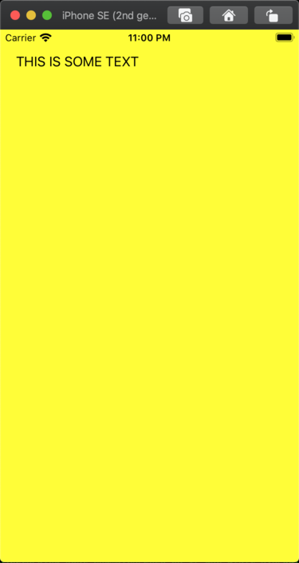
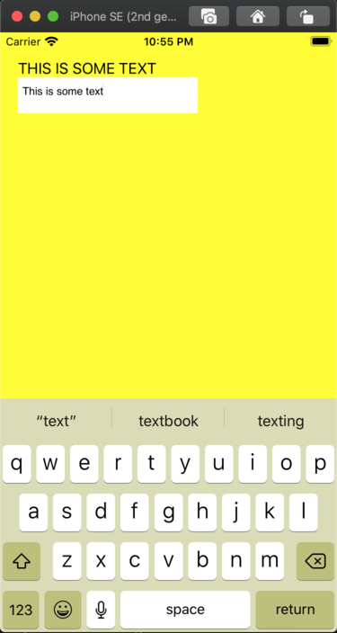

Building an (almost entirely) rust iOS app using uikit-sys.
Introduction§
In my last post, we learned how one could use bindgen to generate Rust bindings for an Objective-c framework but didn't show you how to use them. In this post, I show how to actually use those. This will involve:
- unsafe rust
- Learning some uikit concepts.
- Usage of winit on iOS and dealing with some of the issues.
- How to mild use of
cargo-bundleandxcodegen
disclosure: Some of the unsafe rust in this post will have memory leaks.
There's been some controversy about unsafe
rust. I want to say that
writing a safe wrapper for unsafe rust is important to me and I've spent a lot
of time thinking about how build a safe wrapper for uikit-sys. As of writing
this post, I've not yet figured it out.
Setup§
Many have written about doing this but let's do it again
cargo new --lib use-uikit-sys but you can name it whatever you
want. I'm naming it this way because it matches the directory in my
simlay/blog-post-examples repo under the use-uikit-sys
directory.
Then you need to add winit and uikit-sys as dependencies but I like to also
add logging facilities as well. Your Cargo.toml should look something like:
[package]
name = "use-uikit-sys-blog-post"
version = "0.1.0"
authors = ["Sebastian Imlay <my-email@gmail.com>"]
edition = "2018"
[dependencies]
uikit-sys = { git = "https://github.com/simlay/uikit-sys" }
winit = "0.22.2"To get started with winit, do exactly what's on their current
guide. So, your src/lib.rs should
look like:
use winit::{
event::{Event, WindowEvent, StartCause},
event_loop::{ControlFlow, EventLoop},
window::WindowBuilder,
};
pub extern fn run_app() {
let event_loop = EventLoop::new();
let window = WindowBuilder::new().build(&event_loop).unwrap();
event_loop.run(move |event, _, control_flow| {
*control_flow = ControlFlow::Wait;
match event {
Event::NewEvents(StartCause::Init) => {
println!("The app has started!");
},
Event::WindowEvent {
event: WindowEvent::CloseRequested,
window_id,
} if window_id == window.id() => *control_flow = ControlFlow::Exit,
_ => (),
}
});
}Using cargo-bundle to bundle an iOS app.§
For the case of an example, I'd say cargo-bundle is the quickest way to
bundle an app but it's got some
issues. It requires a
description
field
in your Cargo.toml which isn't there by default.
First off, you need an example to run in your bundle so you need to add mkdir examples and then put the following in examples/uikit.rs:
use my_uikit_sys_app::run_app;
fn main() {
run_app();
}Then add a package.metadata.bundle.example.uikit section to your
Cargo.toml. Your Cargo.toml should now look like:
[package]
name = "use-uikit-sys-blog-post"
version = "0.1.0"
authors = ["Sebastian Imlay <my-email@gmail.com>"]
edition = "2018"
description = ""
[package.metadata.bundle.example.uikit]
name = "uikit"
identifier = "com.github.simlay.uikit"
category = "Utility"
short_description = "An example of a uikit-sys"
long_description = """An example of using uikit-sys
"""
[dependencies]
uikit-sys = { git = "https://github.com/simlay/uikit-sys" }
winit = "0.22.2"At this point, you should run install cargo bundle, bundle the example into an iOS app, install the app on a simulator and start the app as such:
$ cargo install cargo-bundle --git https://github.com/burtonageo/cargo-bundle
$ cargo bundle --example uikit --target x86_64-apple-ios
$ xcrun simctl install booted target/x86_64-apple-ios/debug/examples/bundle/ios/uikit.app
$ xcrun simctl launch --console booted com.github.simlay.uikitI tend to put this stuff in a
Makefile.
You will obviously need to have the Xcode
installed and an iOS simulator booted
up. If you're not
familiar with xcrun simctl commands,
nshipster and
xcblog
are good sources.
Anyway, after you've ran xcrun simctl launch --console booted com.github.simlay.uikit, the shell console should hang and display something
like:
com.github.simlay.uikit: 53589
The app has started!Where in this case, 53589 is the PID of the app and The app has started! is
from the println! in the code above. Going over to the iOS simulator, you'll
notice that it's entirely blank. This is because we have literally nothing for
view. That's in the Adding some stuff to the
view below.
Using xcodegen to bundle an iOS app.§
I've used cargo-bundle for iOS and fixed various
issues
but this is an issue I'm not sure how to fix
burtonageo/cargo-bundle#91.
For iOS features which you need to need to know how your
layout works, you might want to use xcodegen. It's a lot more complicated
than cargo-bundle but worth it.
Anyway, first off install
xcodegen and
cargo-lipo, then you'll have to turn
your crate into a
staticlib by adding this
to your Cargo.toml:
[lib]
crate-type = ["staticlib", "lib"]The lib will keep the existing functionality of cargo-bundle.
add the following file to project.yml:
name: uikit_example
options:
bundleIdPrefix: com.rust
configs:
Debug: debug
Release: release
targets:
cargo_ios:
type: ""
platform: iOS
legacy:
toolPath: /bin/sh
arguments: "build_rust_deps.sh"
workingDirectory: "."
use_uikit_example:
sources: ios-src/
type: application
platform: iOS
deploymentTarget: "13.0"
scheme:
environmentVariables:
- variable: RUST_BACKTRACE
value: 1
isEnabled: true
- variable: RUST_LOG
value: info
isEnabled: true
- variable: METAL_DEVICE_WRAPPER_TYPE
value: 1
isEnabled: true
settings:
base:
OTHER_LDFLAGS: ["$(inherited)", "-luse_uikit_sys_blog_post"]
ENABLE_BITCODE: NO
CLANG_CXX_LANGUAGE_STANDARD: c++14
CLANG_CXX_LIBRARY: libc++
configs:
debug:
HEADER_SEARCH_PATHS: ["$(inherited)", "ios-src/"]
LIBRARY_SEARCH_PATHS: ["$(inherited)", "./target/universal/debug"]
release:
HEADER_SEARCH_PATHS: ["$(inherited)", "ios-src/"]
LIBRARY_SEARCH_PATHS: ["$(inherited)", "./target/universal/release"]
dependencies:
- sdk: Security.framework
- sdk: UIKit.framework
- target: cargo_ios
embed: false
info:
path: ios-src/Info.plist
properties:
UILaunchStoryboardName: LaunchScreenThis describes the project layout to xcodegen which then generates an Xcode project. With this setup, you'll need:
+-- ios-src/
| +-- main.m
| +-- bindings.h
| +-- Info.plist
+-- build_rust_deps.shInfo.plist is for the iOS app
metadata,
build_rust_deps.sh
really just wraps cargo lipo,
bindings.h contains only void run_app(void); and main.m has:
#import "bindings.h"
int main() {
run_app();
return 0;
}This is the only bit of non-rust programming in this project.
For now, bindings.h is hardcoded to match the function from src/lib.rs but
if you want to do this correctly, I recommend adding build.rs to your crate,
and use
cbindgen
to autogenerate the contents bindings.h based on your #[no_mangle] extern fns in your crate.
To make this project run:
$ xcodegen
$ xcodebuild -scheme use_uikit_example -configuration Debug -destination 'platform=iOS Simulator,name=iPhone SE (2nd generation),OS=13.6' -derivedDataPath build
$ xcrun simctl install booted build/Build/Products/Debug-iphonesimulator/use_uikit_example.app
$ xcrun simctl launch --console booted com.rust.use-uikit-exampleAt this point, you should get the same result as the cargo-bundle section:
com.rust.use-uikit-example: 63021
The app has started!You can also just run xcodegen and open uikit_example.xcodeproj and push
the magic play button. Similar to the
cargo-bundle section, like adding a
Makefile
for these things.
One annoying thing about doing it via the xcodebuild command shown above is
that the
-destination 'platform=iOS Simulator,name=iPhone SE (2nd generation),OS=13.6'
argument changes with new updates to iPhones and
iOS versions. Someday I or someone will figure out a nice way of getting that
argument from xcrun simctl list but for now we hard code it.
Adding some stuff to the view§
So far, all we've done is make an app with a blank screen which is pretty uninteresting so, let's add some views.
First off, let's change the background color.
To do this we'll need to import some new things:
use winit::platform::ios::WindowExtIOS;
use uikit_sys::{
id,
UIView,
UIColor,
IUIColor,
UIView_UIViewRendering,
};And then once you've created the window you need to get the root view via:
let root_view: UIView = UIView(window.ui_view() as id);
unsafe {
root_view.setBackgroundColor_(UIColor::yellowColor());
}
If you rerun the bundling steps from either the cargo-bundle or the xcodegen and you should have a yellow app as seen here:

So, what's this do?§
So, first off when we do UIView(window.ui_view() as id); this is converting
the c_void that winit
use for the root
view
and then casting it to an id which is a pointer to the objective-c object.
It's actually the same type internally in the Window
struct.
Once we do that, we need to use the building blocks generated from the
uikit-sys crate.
One aspect of doing rust targeted at iOS is that docs.rs
doesn't have the any docs for any iOS targeted stuff. It's due to iOS targets
needing xcrun installed on the system and docs.rs runs on ubuntu. To really
get docs for your project, you should do cargo doc --target x86_64-apple-ios --document-private-items --open to get the winit and uikit-sys docs.
Now, the unsafe block to run
root_view.setBackgroundColor_(UIColor::blueColor()); is the thing that
actually set's the color. This is required to be unsafe because everything
inside of that logic is autogenerated from the UIKit framework headers and crosses the FFI boundary. If
you're curious where they are I recommend looking in $(xcrun --sdk iphonesimulator --show-sdk-path)/System/Library/Frameworks/UIKit.framework/Headers/
Anyway, bindgen produces some typed bindings for objective-c. I've spent a
bit of time in the last year trying to make them
better.
So, UIColor::blueColor() returns a UIColor which is just:
#[repr(transparent)]
#[derive(Clone, Copy)]
pub struct UIColor(pub id);The repr(transparent) is the magic behind having UIColor::blueColor()
return a UIColor instance. I sumarized this in my last
post.
Now, the root_view.setBackgroundColor_(UIColor::blueColor()) matches the
background color instance property
assignment
which is the objective-c equivalent to:
root_view.backgroundColor = [UIColor blueColor];Due to the FFI aspect of this, the above statement doesn't translate to rust so
to assign things, bindgen gives you setFoo_ for a property Foo that is not readonly.
In order to use the setBackgroundColor_ function, you need to import
UIView_UIViewRendering.
this is because the background and other rendering methods are all in the
UIViewRendering category of UIView. From what I can tell, the objective-c
engineers at apple use categories as way to organize the sections of code.
Let's add some text and a text field.§
To do this, the building blocks are
UILabel and
UITextField
from the apple docs. You can checkout the uikit-sys equivalents at
UILabel
and
UITextView.
UILabel§
Let's write a function that's called upon the
Event::NewEvents(StartCause::Init) branch of the main event loop in winit:
Event::NewEvents(StartCause::Init) => {
add_label("THIS IS SOME TEXT".to_string(), root_view);
println!("The app has started!");
},with the add_label function thusly:
fn add_label(label_text: String, root_view: UIView) {
use uikit_sys::{
UILabel,
IUILabel,
NSString,
INSObject,
UIView_UIViewHierarchy,
UIView_UIViewGeometry,
NSString_NSStringExtensionMethods,
NSUTF8StringEncoding,
CGRect,
CGPoint,
CGSize,
};
use std::{
ffi::CString,
convert::TryInto,
};
let text = CString::new(label_text.as_str()).expect("CString::new failed");
let text_ptr = text.as_ptr();
let text_length = label_text.len().try_into().unwrap();
unsafe {
let label = UILabel::alloc();
label.init();
let text = NSString(
NSString::alloc().initWithBytes_length_encoding_(
text_ptr as *mut std::ffi::c_void,
text_length,
NSUTF8StringEncoding,
),
);
label.setFrame_(CGRect {
origin: CGPoint {
x: 20.0,
y: 20.0,
},
size: CGSize {
width: 200.0,
height: 40.0,
},
});
label.setText_(text);
root_view.addSubview_(UIView(label.0));
}
}Rebuilding and running the app you get:

You'll notice that this is quite a bit of code with a huge unsafe block just
to get a bit of text on the screen. In fact, there's more unsafe function
calls here than there are safe function calls. The only thing that really could
be factored out of this block is the creation of CGPoint, CGRect, and
CGSize. In my original implementation of this, I actually had the
CString conversion
in the unsafe block but after reading the docs for
as_ptr.
I concluded that this exhibited some undefined behavior.
That is why there is:
let text = CString::new(label_text.as_str()).expect("CString::new failed");
let text_ptr = text.as_ptr();
let text_length = label_text.len().try_into().unwrap();If you were to do let text_ptr = CString::new(label_text.as_str()).expect("CString::new failed").as_ptr(), you
might end up with some undefined behavior.
So, the question here is "when initWithBytes_length_encoding_ is called, does
it take ownership? Otherwise will there be a memory leak?". If we look at
objc-foundation
and
core-foundation,
these implementations imply that the memory is copied when passed to the
Objective-c side. I've failed at finding a place where it explicitly says it
copies the bytes on the objective-c side but if
initWithBytesNoCopy:length:encoding:freeWhenDone:
doesn't copy the bytes and optionally frees it, that implies that
initWithBytes:length:encoding:
does copy the bytes.
Will this leak memory?§
So, what happens if we call add_label multiple times? Well, in short, it
currently leaves the memory allocated and the objective-c side of the FFI
leaves this as a dangling pointer. We should definitely feel bad about it but I
or someone else will write a post on how to do this in a more correct and safe way.
UITextView§
In the past, I've made
iced work on iOS but there was no
keyboard input and makes it a little hard to use. So, using the native keyboard pop up and work is pretty important to an iOS app.
To start, Let's put a add_text_view call in the Event::NewEvents(StartCause::Init) branch of the main event loop in winit similar to above:
Event::NewEvents(StartCause::Init) => {
add_label("THIS IS SOME TEXT".to_string(), root_view);
add_text_view(root_view);
println!("The app has started!");
},And add a add_text_view function:
fn add_text_view(root_view: UIView) {
use uikit_sys::{
CGRect,
CGPoint,
CGSize,
UITextView,
IUITextView,
UIView_UIViewHierarchy,
UIView_UIViewGeometry,
INSObject,
};
let _textview = unsafe {
let ui_textview = {
let view = UITextView(UITextView::alloc().init());
view.setFrame_(CGRect {
origin: CGPoint {
x: 20.0,
y: 50.0,
},
size: CGSize {
width: 200.0,
height: 40.0,
},
});
root_view.addSubview_(UIView(view.0));
view
};
ui_textview
};
}Now when you bundle the app you will have something like:

Funny enough, this section is much simler than the UILabel
section but mostly because a lot of it is the same idea. We're not
passing in pointers to CStrings, we're passing in some structs for the
geometry of the frame across the FFI. Similar to the last section, we've just
thrown memory collection out the window for now.
Thoughts on uikit-sys§
The most annoying thing about this development is that you will need to read
both the Apple's UIKit docs and the generated docs from uikit-sys. There are
plenty of comments in the objective-c headers but adding them to the generated
rust isn't an option. Perhaps it's possible to have source maps?
Due to the nature of working on such an obscure subject, I have been passing
the buck on the
topic until this post. Apple has recommendations
page
which I think the objective-c features retain and relaese could actually
match well with Clone and Drop in rust but that's a discussion for another time.
Closing thoughts§
So, this is a way you could in theory build an iOS app. It's missing a lot.
Things like the text input events are missing, updating different events are
missing, basic memory management like if you were trying to burn the bits. Because of this, I cannot
say that I would recommend uikit-sys over
SwiftUI or just plane ol'
objective-c and UIKit. From what I can tell, this is the first time someone's
tried this hard not to build an iOS app using so few of the apple recommended
libraries. I'm not even sure that this type of work will pass some of the apple
automated app review stuff.
What we (or maybe just I) should do is use uikit-sys in something like
iced which would make that something similar
to a mobile-friendly-cross-platform GUI crate. I will leave that guide for
another time :)